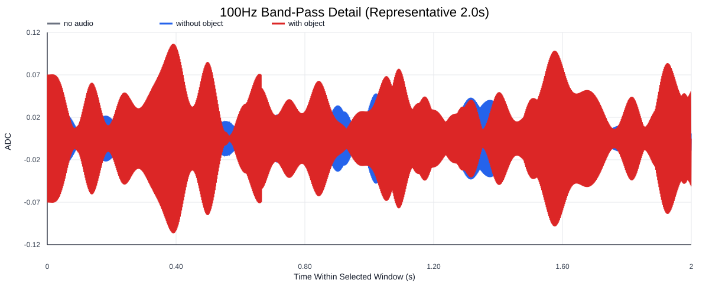
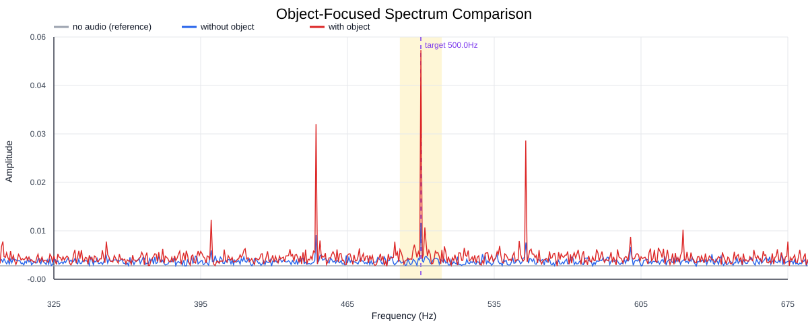
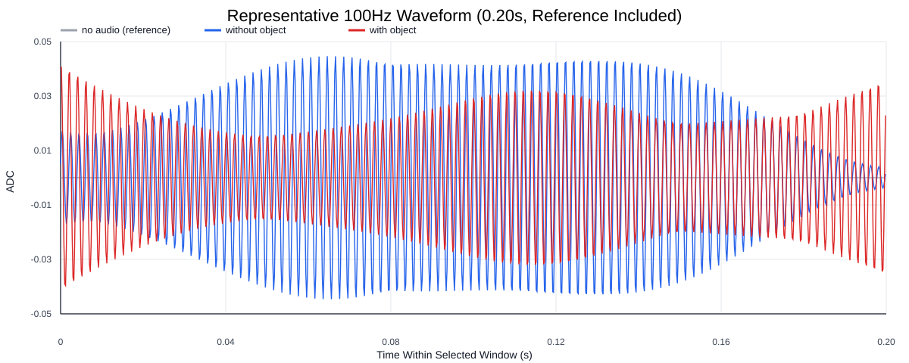
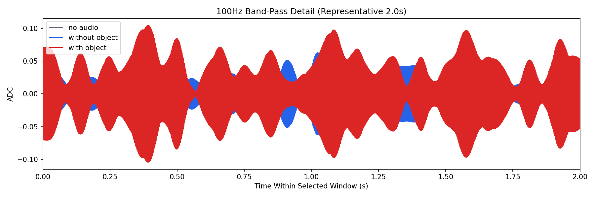
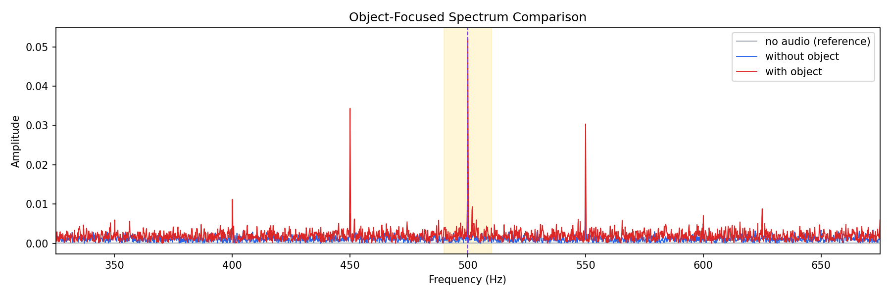
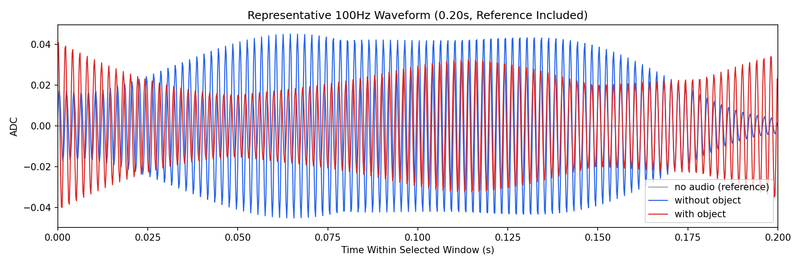

Background: F:\项目类文件夹\异物检测4.10\Data_Dual\frequency_sweep\0500Hz\repeat_03\raw\no_audio.csv
Without object: F:\项目类文件夹\异物检测4.10\Data_Dual\frequency_sweep\0500Hz\repeat_03\raw\without_object.csv
With object: F:\项目类文件夹\异物检测4.10\Data_Dual\frequency_sweep\0500Hz\repeat_03\raw\with_object.csv
| Metric | 无音频 | 100Hz无异物 | 100Hz有异物 | 无异物/无音频 | 有异物/无异物 | 有异物/无音频 |
|---|---|---|---|---|---|---|
| centered_rms | 0.005716 | 0.100240 | 0.201517 | 17.5369 | 2.0103 | 35.2552 |
| raw_target_amp | 0.000117 | 0.010478 | 0.052240 | 89.7363 | 4.9858 | 447.4094 |
| filtered_rms | 0.000557 | 0.012846 | 0.043374 | 23.0582 | 3.3763 | 77.8520 |
| filtered_target_amp | 0.000117 | 0.010478 | 0.052240 | 89.7363 | 4.9858 | 447.4094 |
| filtered_energy_ratio | 0.009500 | 0.016424 | 0.046327 | 1.7288 | 2.8207 | 4.8763 |
| window_filtered_target_amp_mean | 0.000096 | 0.013881 | 0.055462 | 144.7174 | 3.9954 | 578.2093 |
| window_filtered_target_amp_std | 0.000695 | 0.010010 | 0.023301 | 14.4055 | 2.3277 | 33.5320 |





